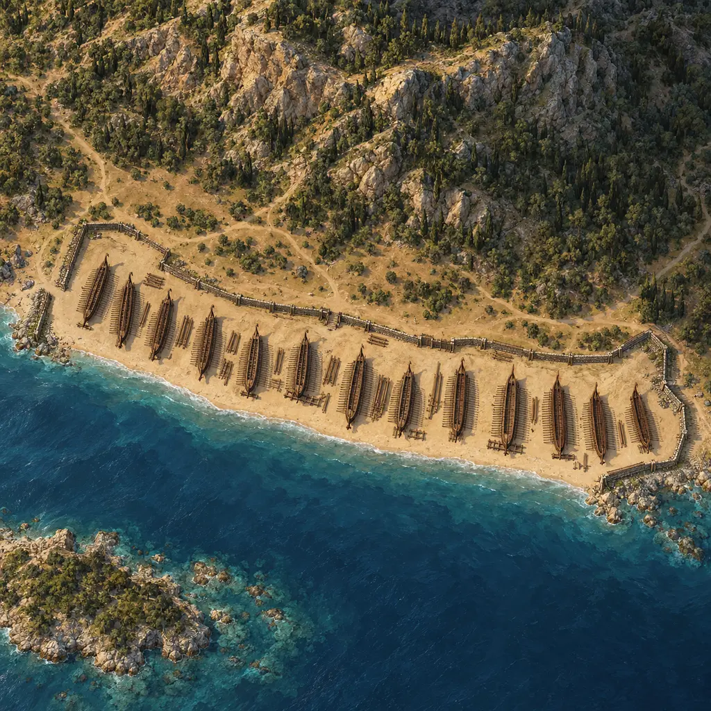
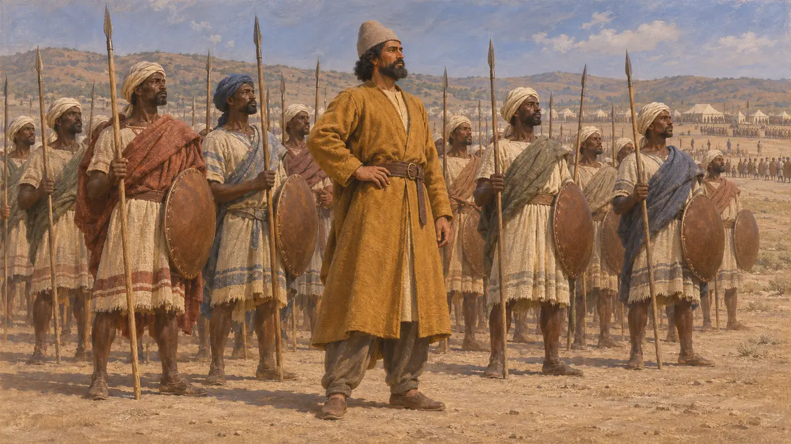
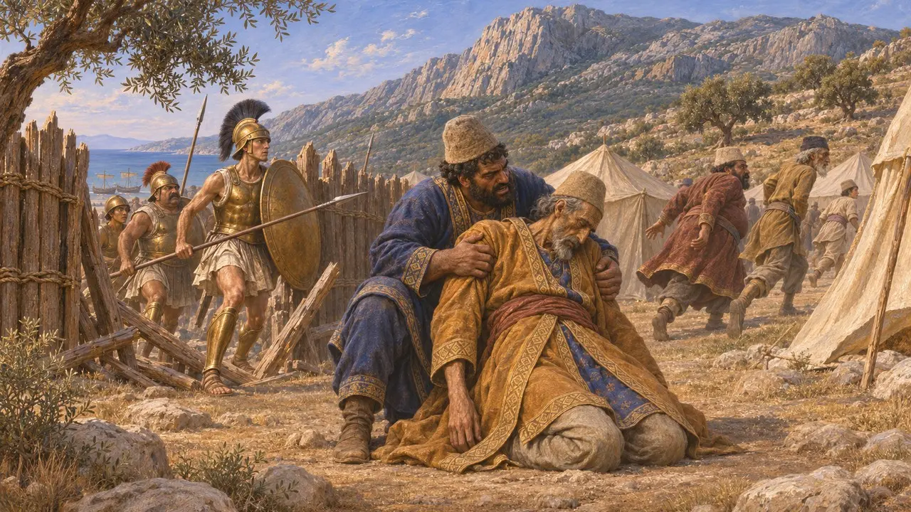
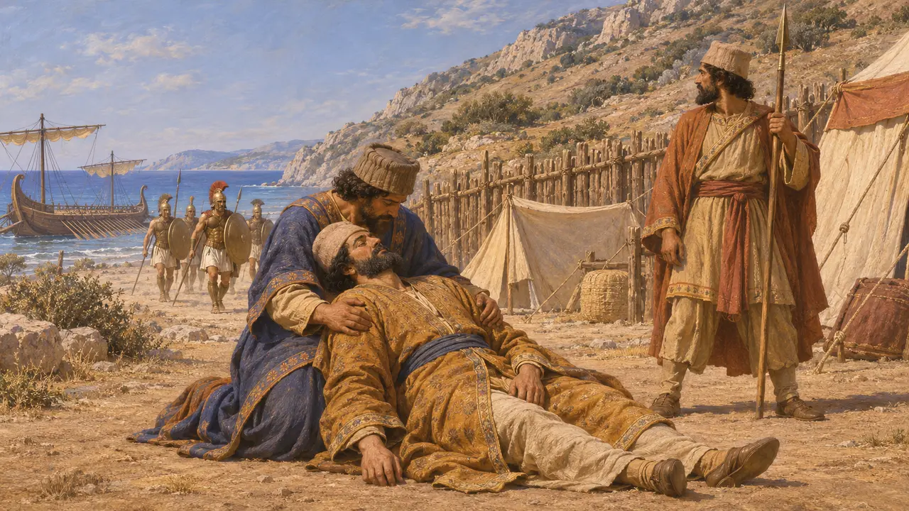
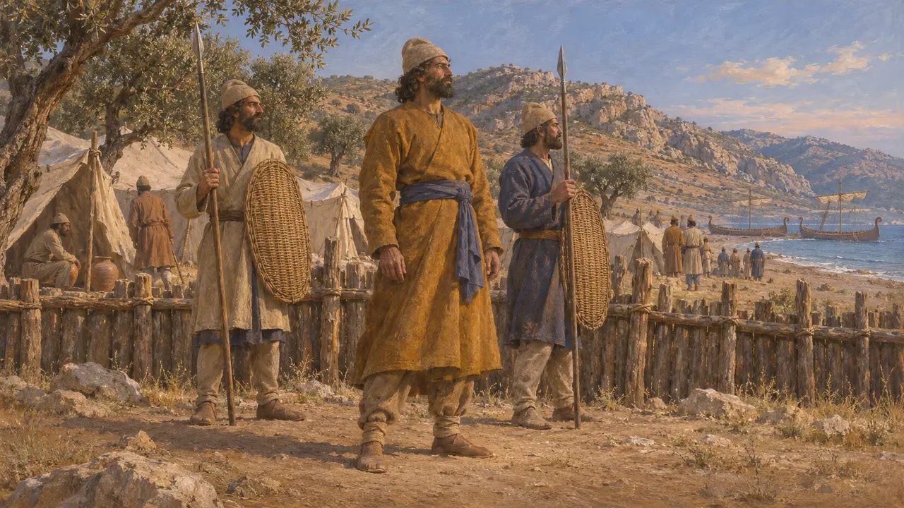

Mardonte
Comandante persiano nell'esercito di Serse, ucciso a Micale nel 479 a.C.
Mardonte, figlio di Bageo, era un ufficiale persiano che prese parte alla spedizione di Serse e, secondo Erodoto, morì a Micale nel 479 a.C. È noto solo da Erodoto. Il suo nome è simile a quello di Mardonio, ma i due erano uomini diversi.
Nel gioco: Mardonte non ha una meccanica propria. Il gioco lo nomina solo negli articoli di evento sulla guerra del 480-479 a.C., compresa la battaglia di Micale, e non nelle scene di alcun livello né sulla mappa.

Un comandante dell'esercito di Serse
Racconto anticoErodoto annovera Mardonte, figlio di Bageo, tra i comandanti dell'esercito di Serse quando fu passato in rassegna durante la marcia. Dice che Mardonte guidava i popoli delle isole del Mar Rosso, che egli descrive tra i contingenti dell'impero.
Herodotus 7.80

Morte a Micale
Racconto anticoErodoto racconta che i Persiani furono sconfitti a Micale nel 479 a.C. dopo che i Greci sbarcarono e attaccarono l'accampamento ai piedi del monte. Tra i comandanti persiani che vi morirono nomina Mardonte, insieme a Tigrane. Dice che Artainte e Itamitre furono tra coloro che sopravvissero o riuscirono a fuggire.
Herodotus 9.102


Ciò che non si può stabilire
Racconto anticoSolo Erodoto menziona Mardonte, e nessun testo persiano lo nomina. Il suo rango esatto e il comando che ricoprì a Micale non risultano chiari dal racconto. Il suo nome e il suo ruolo non possono essere verificati su alcuna fonte indipendente.
Herodotus 7.80; Herodotus 9.102
Fonti
- Herodotus 7.80
- Herodotus 9.102
- Herodotus 9.64
- Herodotus 6.43